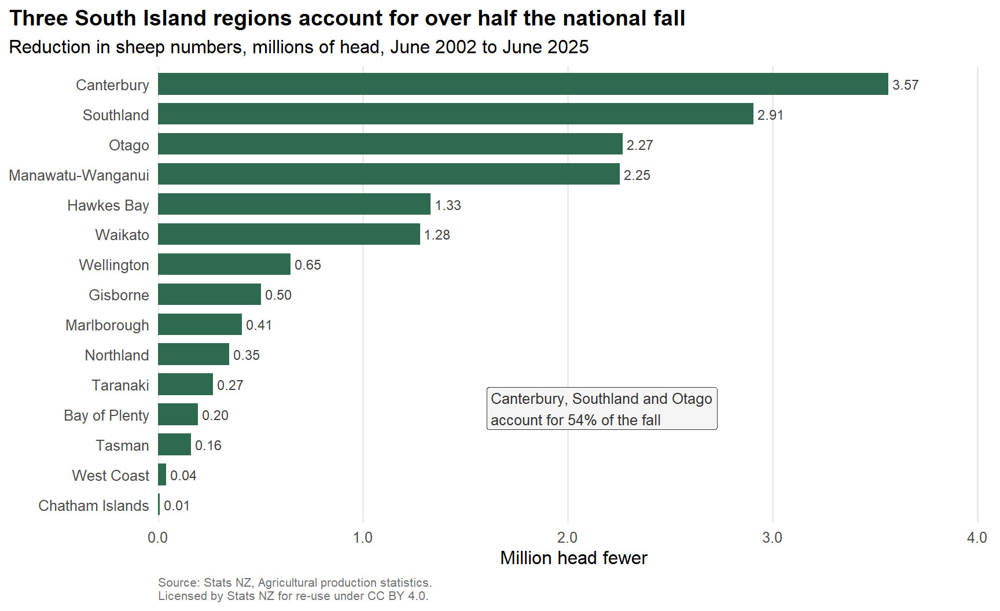
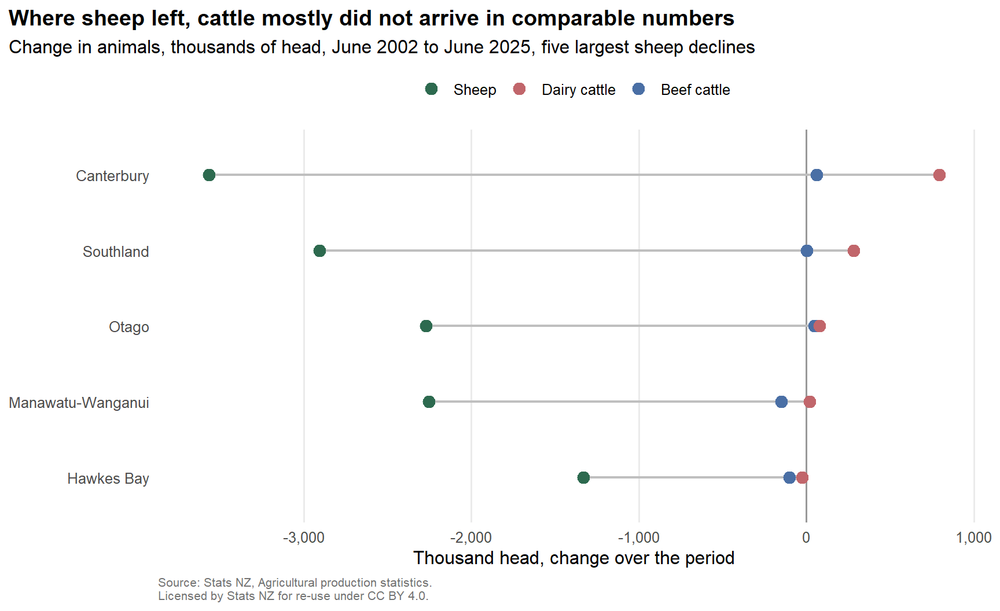
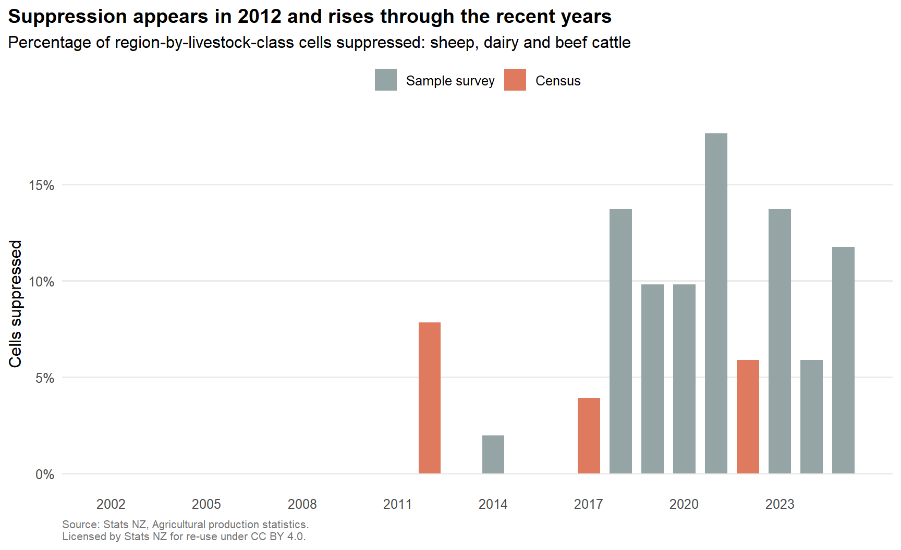

A regional breakdown of the flock decline, 2002–2025
Author
Feng Jiang
Published
September 4, 2026
Source data: Stats NZ, Agricultural production statistics, licensed by Stats NZ for re-use under the Creative Commons Attribution 4.0 International licence.
The short version
New Zealand’s sheep flock fell by 16.32 million between June 2002 and June 2025, a drop of 41 percent.
Three points, each with one number.
Three regions — Canterbury, Southland, Otago — account for 54 percent of the total fall, across the 15 regions where both endpoints are published.
Over the same 23 years the national dairy herd grew by only 588 thousand cattle, while beef cattle fell by 659 thousand.
In 7 of the 13 regions where both series are published, dairy cattle fell alongside sheep rather than in place of them.
What this means
The common story is that sheep farms became dairy farms. At a national level the arithmetic does not support that story. Sheep numbers fell by roughly 16 million head. Dairy cattle rose by roughly six hundred thousand. Those are different orders of magnitude.
The picture changes region by region. Canterbury and Southland did add dairy cattle on a scale worth noticing. Most other regions that lost sheep did not, and several lost dairy cattle as well. Whatever replaced the sheep, in most of the country it was not another animal counted in this table.
What these numbers do not tell you
They are head counts. They say nothing about land area, feed demand, grazing pressure, farm profitability, or what the land is used for now. A dairy cow and a sheep are not exchangeable units, and this page does not treat them as such.
The regional breakdown
Show the code
plot_dat <- sheep_change |>filter(!is.na(change)) |>mutate(region =factor(region, levels =rev(region)),millions =-change /1e6)p1 <-ggplot(plot_dat, aes(x = millions, y = region)) +geom_col(fill ="#2d6a4f", width =0.72) +geom_text(aes(label =sprintf("%.2f", millions)),hjust =-0.15, size =3.1, colour ="grey25") +annotate("label", x =max(plot_dat$millions) *0.45,y =4.2,label =sprintf("Canterbury, Southland and Otago\naccount for %.0f%% of the fall", top3_share),hjust =0, size =3.4, label.size =0, fill ="grey96", colour ="grey20") +scale_x_continuous(labels =label_comma(accuracy =0.1),expand =expansion(mult =c(0, 0.14))) +labs(title ="Three South Island regions account for over half the national fall",subtitle ="Reduction in sheep numbers, millions of head, June 2002 to June 2025",x ="Million head fewer", y =NULL,caption ="Source: Stats NZ, Agricultural production statistics.\nLicensed by Stats NZ for re-use under CC BY 4.0." ) +theme_minimal(base_size =12) +theme(panel.grid.major.y =element_blank(),panel.grid.minor =element_blank(),plot.title.position ="plot",plot.title =element_text(face ="bold"),plot.caption =element_text(colour ="grey45", hjust =0, size =8))ggsave("outputs/figures/01-regional-contribution.png", p1,width =9, height =6, dpi =200, bg ="white")p1

Figure 1: Contribution of each region to the national fall in sheep numbers, June 2002 to June 2025.
Two regions are missing from that chart. Auckland and Nelson have a suppressed 2025 value, so no change can be computed for them. They are excluded and counted, never imputed and never set to zero.
Did dairy replace the sheep?
Show the code
dumb <- substitution |>filter(region %in% top5_regions) |>pivot_longer(-region, names_to ="livestock_class", values_to ="change") |>mutate(region =factor(region, levels =rev(top5_regions)),livestock_class =factor(livestock_class,levels =c("Sheep", "Dairy cattle", "Beef cattle")),thousands = change /1e3 )p2 <-ggplot(dumb, aes(x = thousands, y = region)) +geom_vline(xintercept =0, colour ="grey60") +geom_line(aes(group = region), colour ="grey75", linewidth =0.8) +geom_point(aes(colour = livestock_class), size =3.4) +scale_colour_manual(values =c("Sheep"="#2d6a4f","Dairy cattle"="#c1666b","Beef cattle"="#4a6fa5"), name =NULL) +scale_x_continuous(labels =label_comma(), expand =expansion(mult =0.07)) +labs(title ="Where sheep left, cattle mostly did not arrive in comparable numbers",subtitle ="Change in animals, thousands of head, June 2002 to June 2025, five largest sheep declines",x ="Thousand head, change over the period", y =NULL,caption ="Source: Stats NZ, Agricultural production statistics.\nLicensed by Stats NZ for re-use under CC BY 4.0." ) +theme_minimal(base_size =12) +theme(panel.grid.major.y =element_blank(),panel.grid.minor =element_blank(),legend.position ="top",plot.title.position ="plot",plot.title =element_text(face ="bold"),plot.caption =element_text(colour ="grey45", hjust =0, size =8))ggsave("outputs/figures/02-substitution.png", p2,width =9, height =5.5, dpi =200, bg ="white")p2

Figure 2: Change in sheep, dairy cattle and beef cattle in the five regions that lost the most sheep.
Canterbury is the one region where the substitution story carries real weight. Hawkes Bay and Manawatu-Wanganui lost sheep and cattle. A negative figure in this table means that class of animal declined as well.
Data quality checks
Five rules run over the analysis table on every render.
Show the code
kable(results, align ="lrrrr")
Table 2
rule
items
passes
fails
nNA
head_non_negative
1397
1397
0
0
value_iff_suppressed
1397
1397
0
0
region_label_present
1397
1397
0
0
no_duplicate_cells
1397
1397
0
0
year_in_series_window
1397
1397
0
0
The interesting result is not in that table. It is in the reconciliation: the published national total against the sum of the regions.
The residual is zero, to the head, in every year where all seventeen regions are published and no cell is suppressed. It becomes non-zero for exactly two reasons, and only those two: a region is suppressed, or a region code is absent from the table for that year. It is not a join error and it is not perturbation.
Suppression is not constant over time
Show the code
p3 <-ggplot(supp, aes(x = year, y = rate)) +geom_col(aes(fill = is_census_year), width =0.7) +scale_fill_manual(values =c("FALSE"="#95a5a6", "TRUE"="#e07a5f"),labels =c("Sample survey", "Census"), name =NULL) +scale_x_continuous(breaks =seq(2002, 2025, 3)) +scale_y_continuous(labels =label_percent(scale =1)) +labs(title ="Suppression appears in 2012 and rises through the recent years",subtitle ="Percentage of region-by-livestock-class cells suppressed: sheep, dairy and beef cattle",x =NULL, y ="Cells suppressed",caption ="Source: Stats NZ, Agricultural production statistics.\nLicensed by Stats NZ for re-use under CC BY 4.0." ) +theme_minimal(base_size =12) +theme(panel.grid.major.x =element_blank(),panel.grid.minor =element_blank(),legend.position ="top",plot.title.position ="plot",plot.title =element_text(face ="bold"),plot.caption =element_text(colour ="grey45", hjust =0, size =8))ggsave("outputs/figures/03-suppression-rate.png", p3,width =9, height =5, dpi =200, bg ="white")p3

Figure 3: Share of regional cells suppressed, by year.
No cell is suppressed between 2002 and 2011. Suppression appears from 2012 and rises through the later years, peaking at 17.6 percent in 2021. The census years 2017 and 2022 sit visibly below the survey years around them, which is what a rule based on sampling error or imputation share would predict. 2012 is the exception, and this analysis does not explain it.
One qualification, which matters. I cannot tell from this extract whether the zeroes before 2012 mean that no suppression was applied, or that the flag was not carried in this export. The chart shows what the file contains.
Independent recomputation
Stats NZ publishes a national sheep figure for June 2024. Recomputing it from the regional cells in the same extract gives a different number, and the difference is fully explained.
Show the code
r24 <- reconciliation |>filter(livestock_class =="Sheep", year ==2024)data.frame(Quantity =c("Published, Total New Zealand, June 2024","Recomputed as the sum of published regions","Difference"),Head =c(fmt(r24$published), fmt(r24$region_sum), fmt(r24$residual))) |>kable(align ="lr")
Table 4
Quantity
Head
Published, Total New Zealand, June 2024
23,583,001
Recomputed as the sum of published regions
23,363,016
Difference
219,985
The difference is Auckland, whose 2024 value is suppressed. Filling it with zero would have produced a total that looked tidier and was wrong by 219,985 head.
Method
One table, one vintage. Stats NZ table AGR_AGR_003, Livestock Numbers by Regional Council, dataflow STATSNZ:AGR_AGR_003(1.0), final vintage, downloaded once and committed with its SHA-256. Full provenance is in data-raw/SOURCE.md.
Codes verified before code was written. The extract carries numeric codes and no labels. Sheep, dairy cattle and beef cattle were each confirmed against the published June 2024 national figures before any analysis was run. The LIVESTOCK codelist holds 44 entries that nest inside one another; adding all 44 for 2024 gives 115.7 million animals against a published 33.8 million. Only the three verified codes are used.
Aggregates are separated, not summed.AREA codes 10, 19 and 20 are the North Island, South Island and New Zealand totals. They are flagged in the analysis table and excluded from every regional sum.
Suppressed cells stay suppressed. A suppressed cell becomes NA and carries a flag. It is never filled with zero and never dropped. Regions missing either endpoint are excluded from the change calculation and counted in the text.
Reconciliation is reported, not asserted. No fixed tolerance is set between the regional sum and the published total. The residual is computed for every year and published above.
Release schedule
This analysis uses the final vintage throughout. Up to and including the 2024 survey, Stats NZ published a provisional release in mid-December and a final release in mid-May of the following year. From the 2025 survey those two were replaced by a single final release in mid-April.
Survey design
The reference period is the year ended 30 June. 2002, 2007, 2012, 2017 and 2022 are census years; every other year in the series is a sample survey stratified by regional council, industry and size. The series starts at 2002 because of a break in the target population before that year, which is also why the 1994 observation carried in the same table is excluded.
What was excluded, and why
Territorial authority geography — published only in census years, so no annual series exists at that level.
Horticulture — not collected in many of the years in this window.
Forestry — a definitional break in 2022, and now an MPI rather than a Stats NZ collection.
Farm type — an ANZSIC96 to ANZSIC06 recode in 2007 falls inside the window.
Pre-2002 data — the population break described above.
A choropleth map — a sorted bar chart answers “which regions contributed most” and a map does not, because a map encodes land area rather than magnitude. Canterbury, Otago and Southland are also three of the largest regions by area, which is precisely the confound a map would introduce.
A second data set — the question is answerable inside one table, and every extra source adds provenance to defend without adding evidence.
Implications for output design
Three observations follow from the checks above, and they concern the shape of the output rather than the sheep.
Regional council is the only geography available annually; territorial authority exists only in census years, so any sub-regional time series is structurally unavailable rather than merely unpublished. Suppression now runs above ten percent of cells and is concentrated in the same small regions — Auckland, Nelson, Chatham Islands — so those regional trends are already unusable, and a suppression-aware grouping that pooled them would preserve more signal than suppressing them one at a time does. And the alternating census-and-survey design makes every regional series in this table structurally uneven, which belongs on the output rather than being left for a user to discover from a reconciliation residual.
There is also a class of question this data cannot answer at all: anything at farm level, or any breakdown finer than what is published. The access route for those questions is approved microdata under the Five Safes framework, which I have not used here.
Limitations
Non-census years are sample estimates. I have not recomputed their sampling errors and I have applied no weighting of my own. A year-on-year movement in a single small region should not be read as real change.
Suppressed cells are retained as NA and counted. Two regions are excluded from the 2002–2025 change entirely for that reason.
The sheep-to-cattle comparisons are ratios of head counts. They are not claims about stocking rate, feed demand, land use or emissions.
The target population is GST-registered agricultural businesses. Coverage of the smallest farms is partial and not quantifiable from published data.
Choosing 2002 and 2025 as endpoints is a choice. A 2015–2025 window gives the same qualitative answer, with the same three regions accounting for 59 percent of the fall rather than 54 percent.
Input perturbation has been applied to agricultural statistics since 2017. It is small relative to every effect discussed here, but it is present.
Ethics
This analysis uses published regional aggregates only. No microdata and no IDI access is involved, so the Five Safes framework does not apply to it.
Stats NZ identifies Māori-owned farms in this collection by matching the Agricultural Production Survey against the Tatauranga umanga Māori population. Under Māori data sovereignty principles, and under the Mana Ōrite Relationship Agreement, the authority to interpret and narrate that data sits with iwi Māori and Stats NZ. It does not sit with an unaffiliated analyst. That is why this report does not comment on it.
Reproduce
quarto render
R/load.R reads and tidies the pinned extract, R/checks.R runs the validation rules, and index.qmd produces this page and writes the three figures into outputs/figures/.